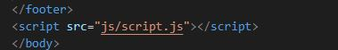
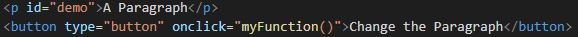
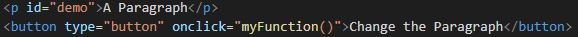
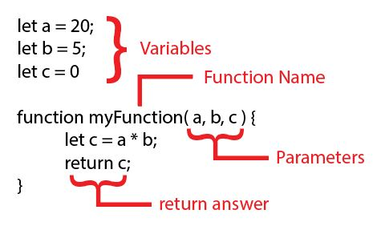
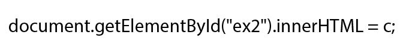
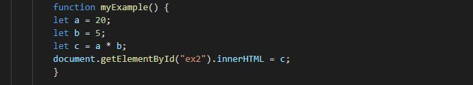
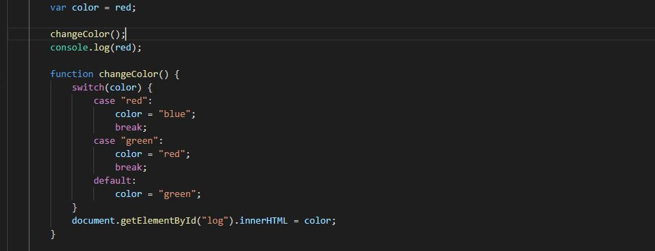

What is a function?
In JavaScript, a function is used to call a block of code.
It allows you to modify parts of the page or make it interactive.
JavaScript can be both internal and external. In order to make an external scheet add a script tag with the javascript page as the src. It is best to add it at the bottom of the HTML page so that the page can load first.
In the below example, when we press the button, it changes the text from "A Paragraph" to something different. Click to find out!
A Paragraph
In this example, when the button is pressed it calls the function myFunction() and exicutes the code.
 

The Parts of a Function
NOTE: This code example does not actually work, it is just showing the different parts of a function.
Another way to return the function is through the use of getElementById as shown in this example.
Here we can see the code being exicuted when we click on it.
In this example, a = 20, b = 5, and c = a * b.

Parameters and Arguments - What's the difference?
Parameters - variables that are a part of the function, and can store the variable value.
function myExample3( a, b, c ) { ← The a, b, and c are parameters.
let a = 20;
let b = 5;
let c = a * b;
document.getElementById("ex2").innerHTML = c;
}
Arguments - a value is placed in these spots when a function is invoked.
myExample3( a, b, c ); ← The a, b, and c are arguments. Notice the semicolin after the called function.
console.log
console.log is used to test your javascript to make sure that it is working the way that you want it too.
consol.log
In order to see this more clearly, I have created a seperate page where we can see how it works.
Any Questions?
Honestly, I could go into a huge lecture about Arrays, Loops, order, strings, and a lot of other things, but time is of the essence and the best way to learn it is to do it yourself!
Here are some useful links that will help you while you relearn JavaScript. I sure know that I will be using them!
Didn't understand any of this? The sitepoint video explains most of the basics. I highly recoment it!